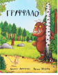

Сказка в стихах для чтения взрослыми детям. Маленький мышонок идет через дремучий лес и, чтобы спастись от лисы, совы и змеи, выдумывает страшного Груффало - зверя, который очень любит есть лис, сов и змей. Но сможет ли находчивый мышонок перехитрить всех голодных хищников? Ведь он-то хорошо знает, что никаких Груффало не бывает... Или бывает?